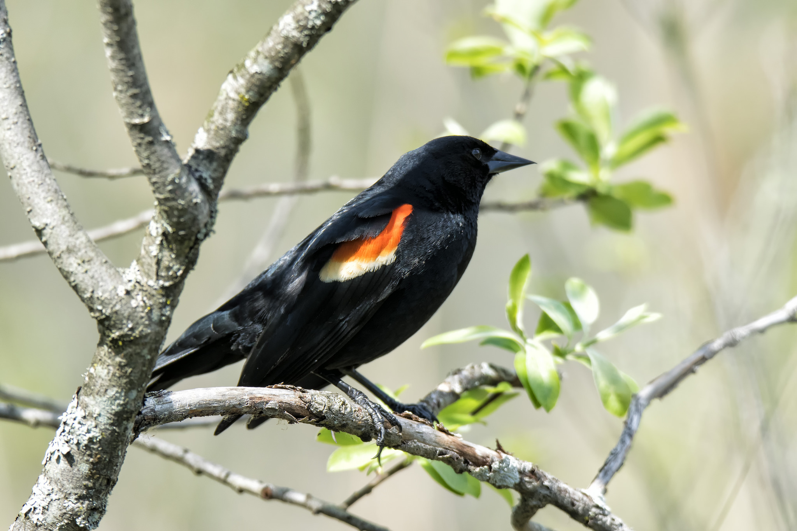
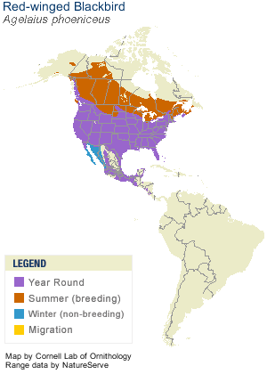

Neat facts
- During breeding season, males will fiercely defend their territory. Not only do they chase away other males and attack predators, they have even been known to go after much larger creatures, such as horses and humans.
- Blackbirds like to roost in flocks. In the winter these flocks can contain millions of birds, spreading out during the day and re-forming at night.
| Binomial Name | Agelaius phoeniceus |
|---|---|
| Length | 17-23 cm |
| Wingspan | 31-40 cm |
| Weight | 32-77 g |
| Habitat | Marshes and rice paddies, sedge meadows, alfalfa fields, wooded areas along waterways |
| Food | Insects, corn, wheat, ragweed, cocklebur, sunflowers |
| Nest Location | Low among vertical shoots of marsh vegetation, shrubs, or trees |
| Nest Size | 4-7 inches across, 3-7 inches deep |
| Egg Description | Pale blue-green to gray with black or brown markings |
| Clutch Size | 2-4 eggs |

I enjoy listening to the blackbirds in the summer. They have a very distinct sound and remind me of exploring prairie ponds during my childhood.